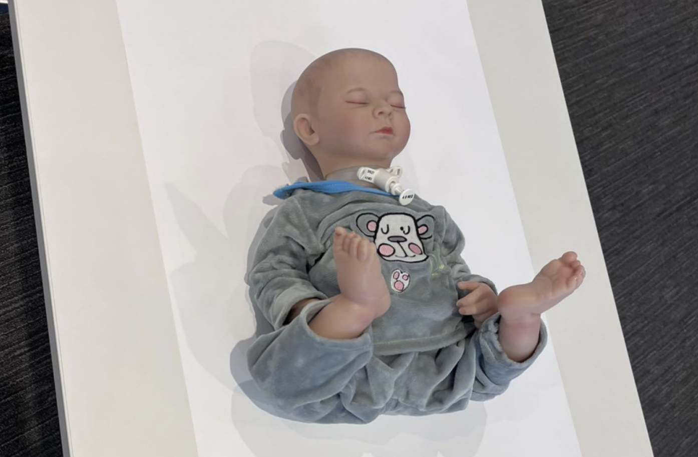
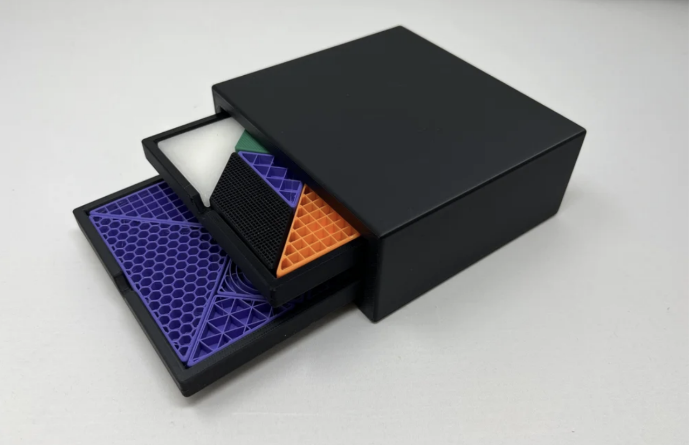
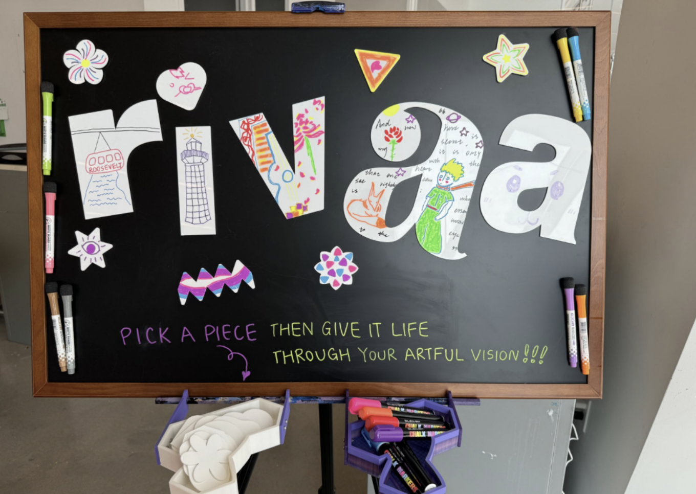

Jiaqi Liu Design
Participatory Design for Digital Making
Teaching Assistant (Prof. Niti Parikh)
A graduate-level studio course focused on digital design and fabrication. Students collaborated with local community organizations, including the New York Public Library, Weill Cornell Medicine, RIVAA Gallery, Genspace, and Bronx River Alliance, to identify real-world challenges and develop design solutions. As the TA, I facilitated partnerships with these organizations, guided students' research and conceptual development, and provided technical instruction in digital and physical fabrication methods, including 3D scanning, modeling, printing, laser cutting, CNC machining, and other hands-on fabrication techniques.
Selected Student Works

BreatheEase (Weill Cornell Medicine)
Haitong Lin, Jenny Li, Yaxuan Huang, David Jee

Layer by Layer (New York Public Library)
Pei-Yun Chen, Elijah Mccall, Nandini Proothi, Ruojia Tao, Amando Cong Xu

InterARTive (RIVAA Gallery)
Yifan Shan, Stella Hong, Bingyan Hu, Reimin Chen, Young He